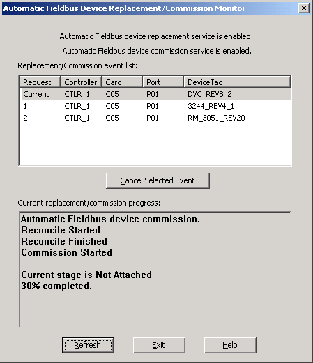

Automatically commission fieldbus devices
The DeltaV system supports the automatic commissioning of fieldbus devices when AMS Device Manager is installed. When fieldbus device auto-commissioning is enabled as a DeltaV system property on the ProfessionalPLUS workstation, it is possible to automatically commission a fieldbus device on a segment by simply attaching the device to the segment as long as the device to be commissioned matches the manufacturer, type, revision, and device tag of a configured device placeholder in the DeltaV Explorer.
It is important that the placeholder is created before the device is attached to the segment. The device will fail to commission if it is connected to the segment before the placeholder is created.
To enable automatic fieldbus commissioning, select the active database in the DeltaV Explorer, select Properties from the context menu, and select the Enable Fieldbus Device Auto-commissioning option. The active database is at the top level in the DeltaV Explorer hierarchy. An icon depicting a factory is used to indicate the active database. By default the active database is DeltaV_System.
Direction of Data Transfer
The direction of data transfer, that is whether the configuration data is transferred from the device to the placeholder or from the placeholder to the device, is determined by the Device data is master option on the active database's Properties dialog. The active database in the above image is DeltaV_System. When the Device data is master option is enabled, the device's configuration data overwrites the device placeholder's configuration data in the database during automatic device commissioning. When this option is not enabled, the device placeholder's configuration data in the database overwrites the device's configuration data during automatic device commissioning. When the Enable Fieldbus Device Auto-commissioning option is enabled, the Device data is master option is enabled by default. Be sure to download the workstation's changed setup data after making any changes to the active database's Properties dialog.
Before commissioning a device, be sure that the port is downloaded and the device placeholder is created but not commissioned and downloaded. Also be sure that the placeholder is created before the device is attached to the segment. A blue triangle on an item in DeltaV Explorer indicates that the item needs downloading. For example, the port in the following image needs downloading.

To automatically commission a device, simply connect the device to the segment.
Monitoring the Device Commissioning Progress
While commissioning a fieldbus device, use the Automatic fieldbus Device Replacement/Commission Monitor to monitor the progress of the device commissioning process. Open DeltaV Diagnostics and click .

The information on the commissioning progress is not automatically updated in this dialog; click the Refresh button periodically to update it. Click the Help button for more information on this dialog.
Examine any System Messages in Process History View
After the device is commissioned, it is good practice to use the Process History View application to examine how the process functioned during commissioning. Click . Use the online help for information on using the application.